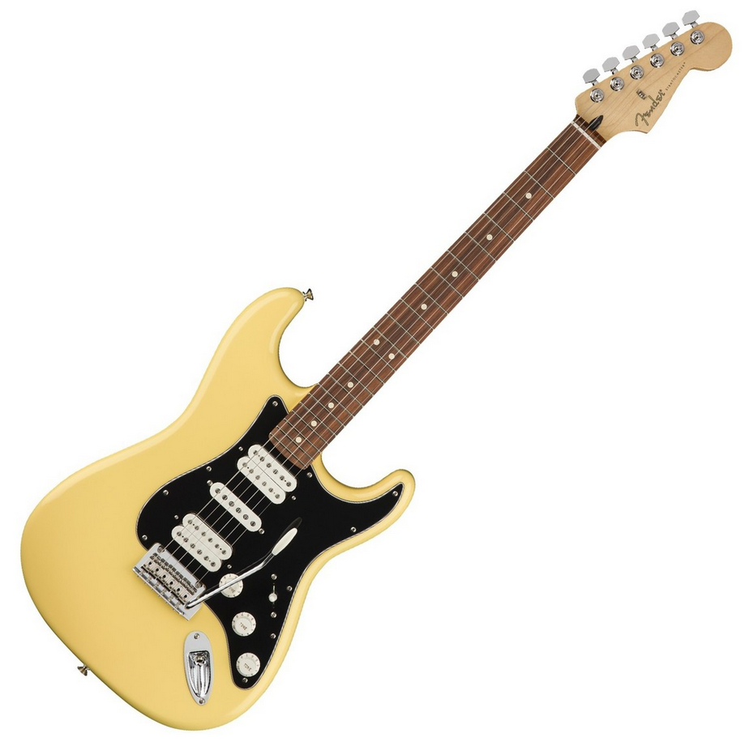
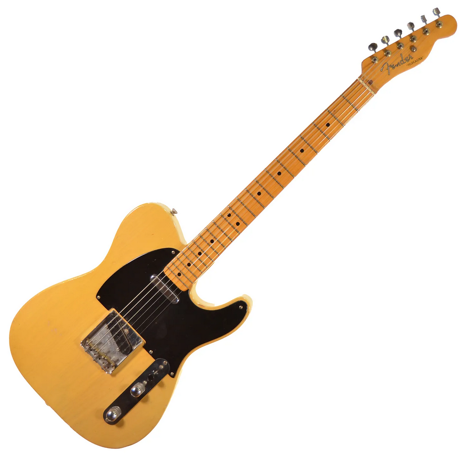
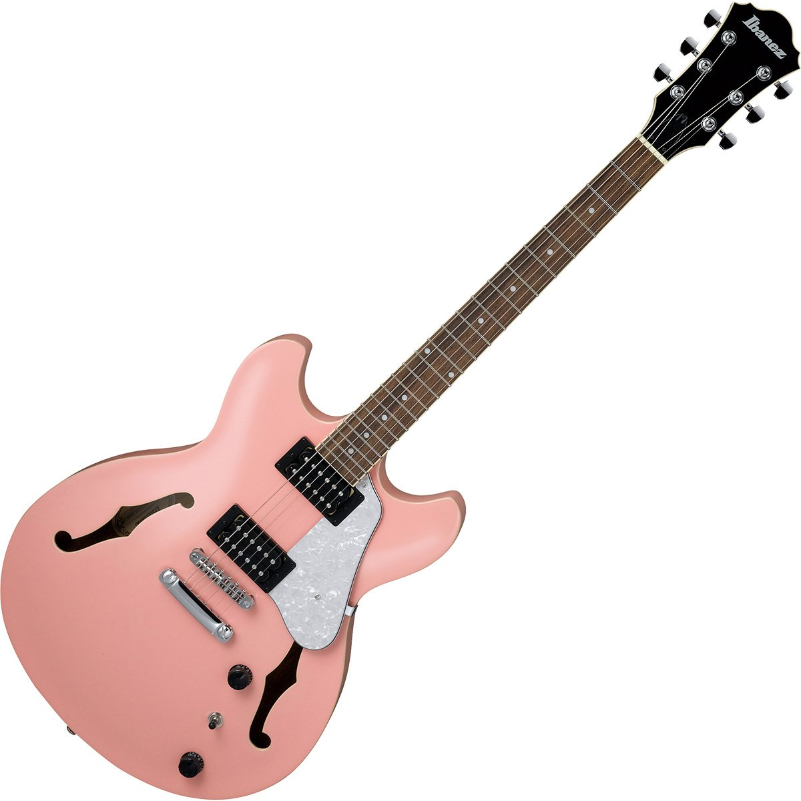
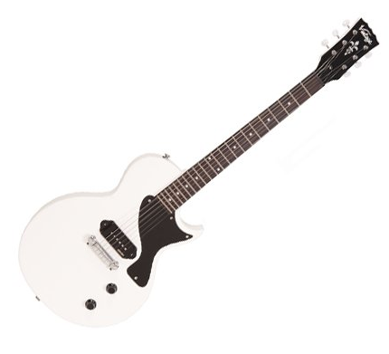

|  | Stratocaster es una guitarra de cuerpo macizo, obtenido a partir de una sola pieza de madera. El mástil va unido a él mediante atornillado, salvo en algunos modelos Custom en que se recurre al encolado o al mástil de la misma pieza que el cuerpo Neck-through. El mayor de los atractivos de esta guitarra radica en su sonido. Profundamente sensible al ataque de la púa, se considera el timbre de la Strat uno de los más característicos de la historia de la guitarra moderna. |
|  | La Fender Telecaster es una guitarra eléctrica de cuerpo macizo mundialmente conocida, llamada "la tabla" en sus comienzos. Se caracteriza por la simplicidad en su diseño y por el sonido que se obtiene de sus dos pastillas de bobinado simple o single coil, que aparecen en la inmensa mayoría de sus modelos en lugar de las de bobinado doble o humbuckers que aparecieron posteriormente en otras guitarras. |
|  | Las guitarras Hollow-Body, están construidas y diseñadas con el objetivo de mejorar "la fuerza y calidad del tono" del instrumento. Entre estas características, la principal es la ausencia en el interior de la caja de resonancia de elementos tales como empalmes, bloques o puentes, que de ser empleados restarían al instrumento gran parte de su sonoridad. |
|  | Además del corte inferior más común, muchos instrumentos tienen un corte superior. Los cortes dobles permiten que el pulgar y los dedos pasen la unión del cuello y el cuerpo. Además, el botón de correa en las guitarras de corte doble generalmente se coloca en el extremo de la bocina superior, más arriba del cuello que en las guitarras sin corte. Esto mejora el equilibrio del instrumento cuando se toca con una correa. Un corte doble también facilita el uso zurdo de instrumentos diestros. |